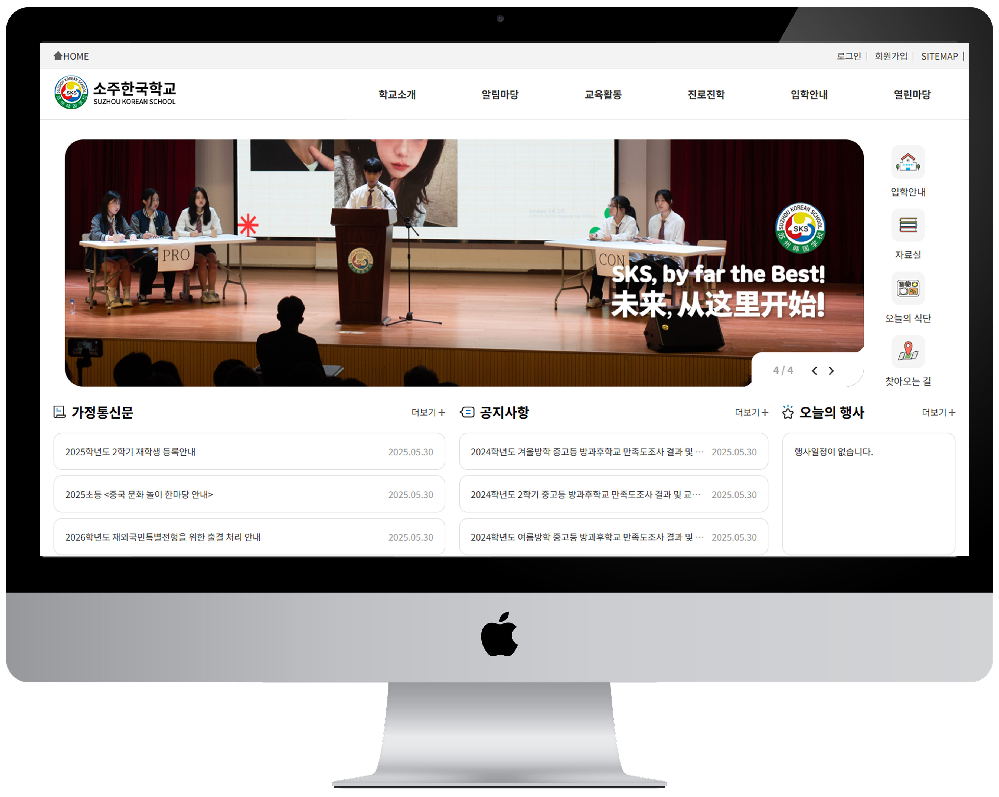
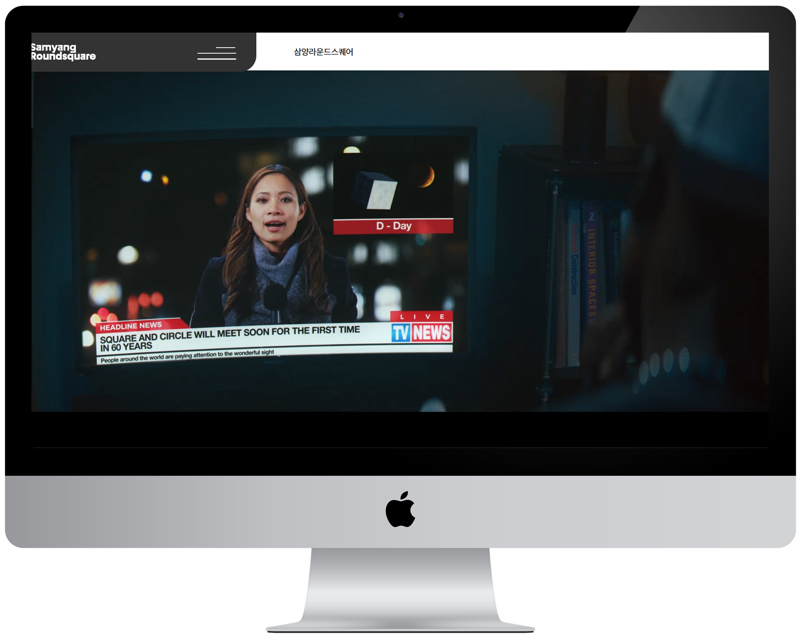
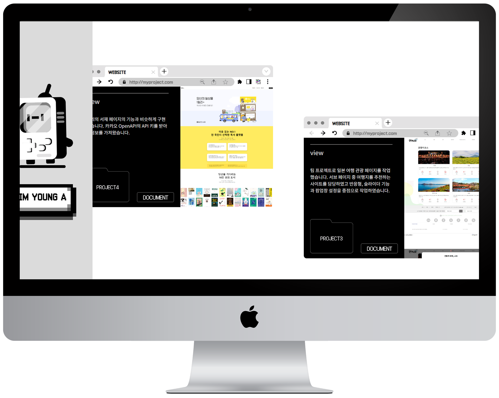
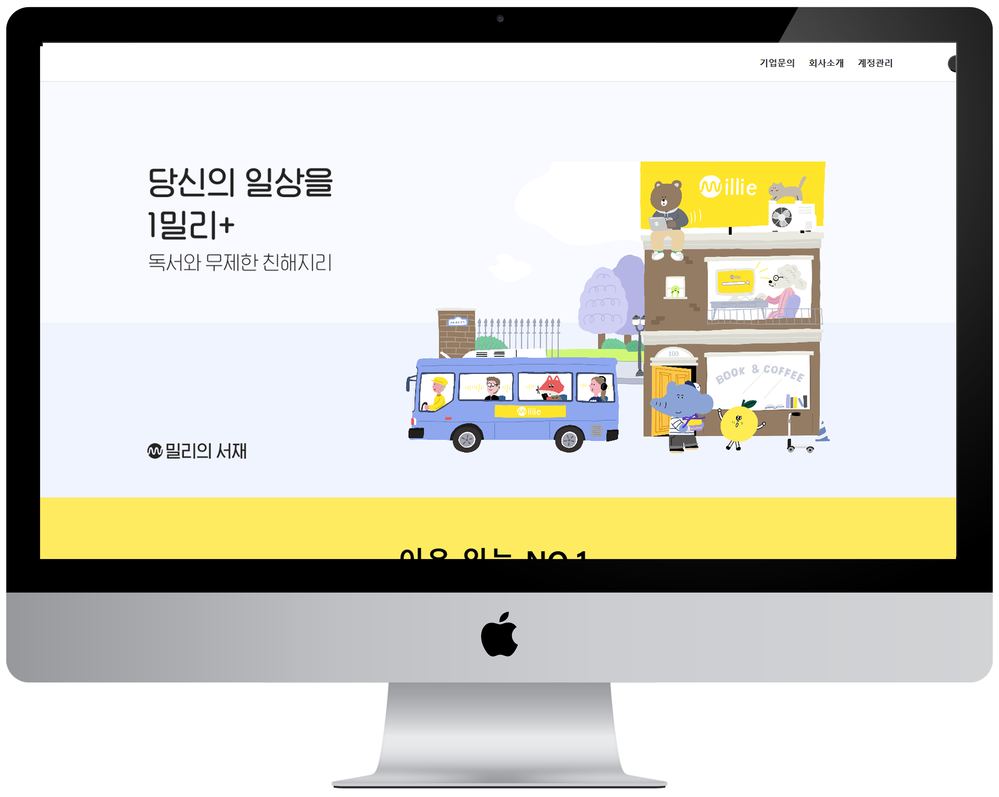
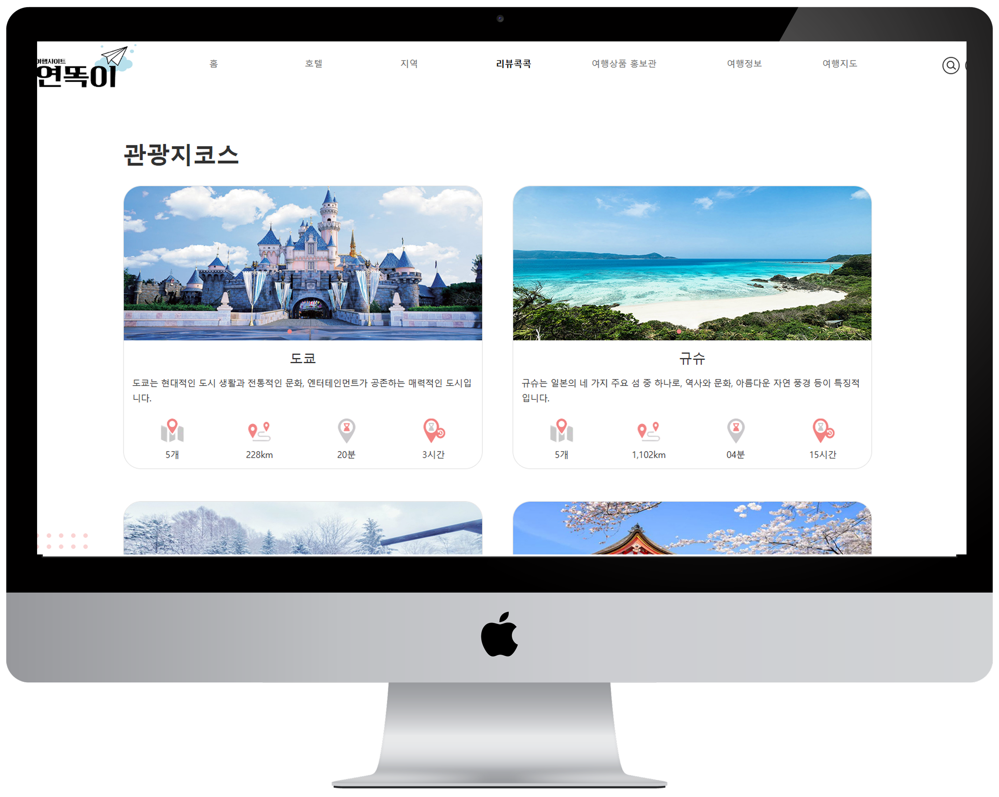
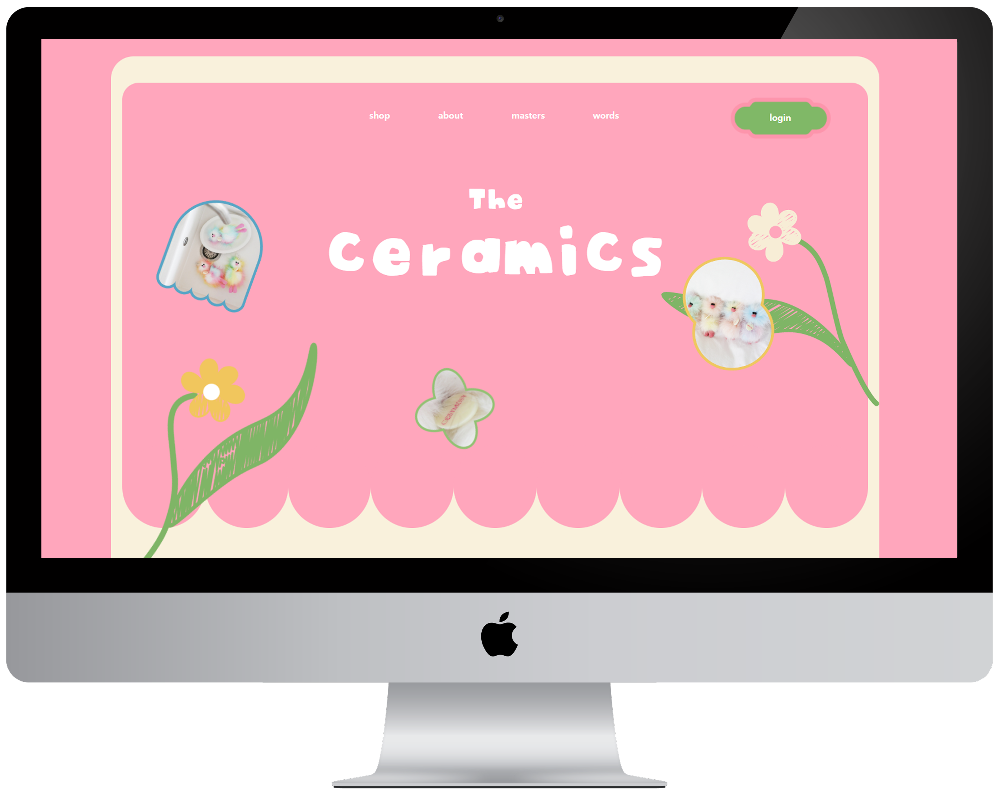

work
project#8
반응형 사이트
소주한국학교
-

-
유지보수를 고려한 CSS 구조
PC에선 드롭다운, 모바일에선 햄버거 메뉴를 적용한 반응형 웹사이트입니다. Swiper.js로 메인 배너와 앨범에 자동 슬라이드를 구현했고, 미디어 쿼리로 해상도별 레이아웃을 유연하게 조정했습니다. 색상 변수와 유틸리티 클래스, 시맨틱 태그 등을 활용해 유지보수성과 접근성을 고려했습니다.
work
project#7
반응형 사이트
삼양라운드
-

-
사용자 경험을 고려한 유연한 레이아웃 구성
Grid 와 Flexbox를 조합해 콘텐츠 흐름을 정돈하고, vw 단위를 활용해 모든 요소가 화면 크기에 따라 자연스럽게 조정되도록 설계했습니다. PC와 모바일 환경에 맞춰 메뉴 동작 방식을 분리하고, 브라우저 크기 변화에도 안정적으로 작동하도록 이벤트를 제어했습니다.
work
project#6
2024 PORTFOLIO
국비 교육 포트폴리오
-

-
픽셀 감성과 인터랙션의 조화
스크롤에 따라 콘텐츠가 가로로 이동하고, 마우스 hover 시 폴더 이미지와 텍스트 컬러가 바뀌는 등 시각적 피드백을 적극 활용해 몰입도를 높였습니다. SCSS의 변수와 믹스를 활용해 전체 스타일의 일관성과 확장성을 유지하며, 디자인과 기능의 균형을 고려해 구성했습니다.
work
project#5
react 사이트
BEATTITUDE
-

-
React 컴포넌트 기반 쇼핑몰 UI
React‑Bootstrap과 Swiper Slider로 재사용 가능한 컴포넌트를 설계하고, fetch/axios로 불러온 상품 데이터를 Redux로 전역 관리해 장바구니 기능을 구현하며 React Router로 SPA 내비게이션을 처리하고 CRA 기반으로 빌드부터 배포까지 완료했습니다.
work
project#4
Open API 사이트
밀리의 서재
-

-
API 연동과 인터랙션 구현
책 제목을 배열에 담아 카카오 도서 API로 정보를 받아오고, 썸네일·제목·저자 데이터를 각 리스트 항목에 정확히 출력했습니다. 탭과 버튼에 클릭 이벤트를 적용해 선택한 항목만 보이도록 구성하고, ‘더보기’ 클릭 시 콘텐츠가 자연스럽게 펼쳐지는 애니메이션 효과도 구현했습니다. 또한 스크롤 시 섹션 요소들이 부드럽게 등장하도록 트랜지션 효과를 적용했습니다.
work
project#3
팀 협동 사이트
연똑이
-

-
함께 만든, 더 나은 사용자 경험
팀 프로젝트로 일본 각 지역 행사 소개 서브페이지 작업을 맡아 반응형 레이아웃과 슬라이더, 팝업 모달을 구현했습니다. 첫 번째 슬라이더와 두 번째 슬라이더는 각각 재생 시간을 다르게 설정하여 사용자가 콘텐츠를 자연스럽게 볼 수 있도록 했으며, 화면 크기에 따라 보여지는 슬라이드 수를 조절해 사용자 경험을 고려했습니다. 또한 여행의 자유로움을 표현하기 위해 종이비행기 모티브를 로고에 적용해 브랜드 아이덴티티를 반영했습니다.
work
project#2
반응형 사이트
GHIBLI 스튜디오
-

-
3D 카드와 스크롤 애니메이션
3D 회전 효과를 적용한 카드 내비게이션, 스크롤 기반 애니메이션으로 인터랙티브한 시각적 요소를 주어 사용자 경험을 고려했습니다. prependTo/appendTo 메서드를 활용한 무한 슬라이드 기능으로 콘텐츠 간 전환을 부드럽게 구현하고, 다양한 디바이스에서 최적의 사용자 경험을 제공할 수 있도록 반응형 웹 디자인을 최적화했습니다.
work
project#1
웹 표준 사이트
The Ceramics
-

-
The Ceramics
아기자기한 악세사리 브랜드를 주제로 핀터레스트에서 레퍼런스를 찾아가며 전체적인 분위기와 구성을 직접 기획했고, 일러스트와 포토샵으로 만든 오브젝트들을 활용해 감성적인 느낌의 UI 첫 개인 프로젝트입니다.